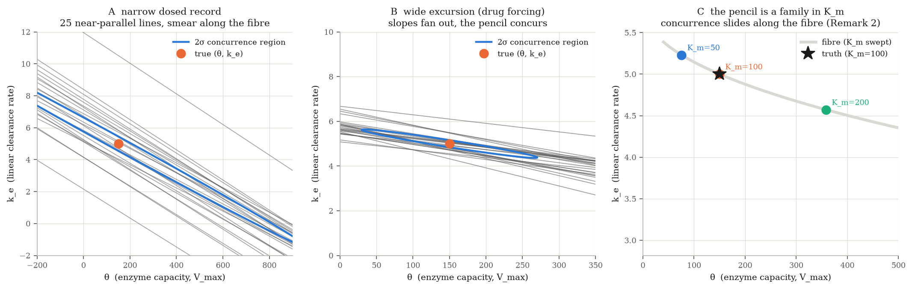
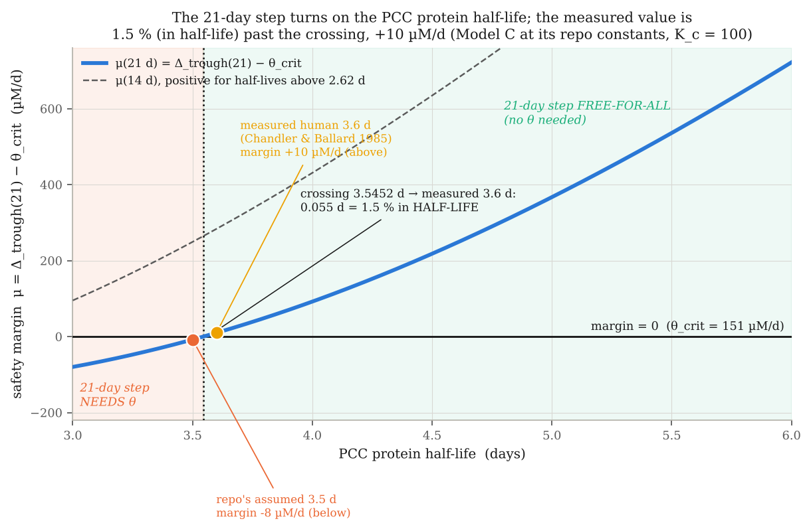

PCC Capacity Study Recap
What the study asked, what it found, and where it stopped, in plain language. It starts by checking your own summary point by point.
What these numbers are. This is a design study on a simulated model, not an analysis of patients. Most numbers come from one simulated patient whose enzyme works at 5% of normal, with 25 monthly blood draws over two years while on therapy. Where a number uses other capacities, other draw schedules or a simulated population, the text says so. The "24 records" in the early rounds are 24 diet histories of that one patient. The results describe the managed, stable state between crises. They say nothing about an untreated or decompensating patient.
Is your summary right?
Two independent reviewers graded each of your five statements against the report and agreed on every verdict. A later check judged two of those verdicts too strict for what you meant (statements 3 and 5), so they are relaxed here. Your words are quoted as you wrote them.
-
the problem was on resolution of this adding more sensors. Like sensor fusion was the key for it.
Not rightSensor fusion was tested and it did not solve the problem. The two sensors that measure the nuisance quantities, a tracer for the other clearance route and a load-turnover test, took the uncertainty on capacity from 3.05 to 0.44. That is seven times better, but still more than twice the 0.20 target, and 0.29 even with both quantities known exactly. An enzyme assay on the patient's cells reaches 0.20 only if its calibration factor κ is assumed known, and even then it measures test-tube activity. Round 6 found that test-tube activity predicts whole-body capacity only loosely, which leaves an error of about 0.65. So no set of sensors reaches the target for the quantity the model needs.
Rounds 4–6 · R-G -
We were also interested to quantify the uncertainty and we have used the pencil plotting
Partly rightQuantifying the uncertainty was the goal from round 1. The number, 3.05, comes from the Fisher information. Simulating the same record gave an even wider spread (about 7–8), which confirmed the negative result. The pencil plot came at the very end, in round 18. It is a picture of why capacity cannot be pinned down and an independent check of the earlier numbers. It changed none of them.
Round 1 onward; pencil in round 18 · R-Q -
we decreased the uncertainty in a way that the system could have been evaluated
Partly rightHalf of this holds. The uncertainty on the patient's capacity θ never came down: it stays far above the target by every route the data support. What came down was the uncertainty on λ, how fast the drug's enzyme boost fades, and the dosing decision turned out to need λ rather than θ. Under Model C that makes the 14- and 15-day intervals decidable for every patient. The 21-day interval stays open (section 6). Change within one patient could also be tracked in the model, but only if real patients' marker variability is low, which nobody has measured. All of this came before the pencil plot, not after it.
Rounds 3 and 11–19 · R-D, R-J to R-S -
we measured how long did we need to wait before being able to understand if a patient may need less injection than before
Partly rightRight question, but the answer is not one waiting time. Round 13 asked it on simulated records, and later rounds refined it. The 15-day interval needs no waiting (under Model C, for any of its unmeasured constants). λ is pinned to ±25% within 6 months, and to ±5% in 1–4 years depending on how often blood is drawn. Estimating one patient's capacity from the passive record never makes the 21-day interval available. Whether λ settles the 21-day question depends on where the true liver value sits: near 4.3 days, a year of monthly draws gives an 80% chance of a clear answer; near the measured 3.6 days, no single patient's record ever does (section 6).
Round 13 · R-L, refined in R-N to R-S -
We shared the difference between the current dosage and something a little more permissive
RightYes. "Dosage" here means how often: the comparison was the current injection every 14 days against more permissive intervals of 15 and 21 days, at the same total amount of drug. A longer interval means fewer, larger injections, not less drug.
Rounds 11–17 · R-J, R-L
In one sentence: the patient's enzyme capacity was never measured well enough, so the study changed the question. The interval decision needs the drug's protein half-life instead. That settles the 14- and 15-day intervals under Model C. The 21-day interval sits on a knife-edge that depends on the liver half-life, which has not been measured, and on Model C constants that have not been measured either.
The model, the three versions, and the drug
At steady state, the propionate load a patient takes in is cleared by two routes: the defective enzyme (PCC) and everything else.
- m
- the marker, the metabolite level measured in each blood draw
- θ
- enzyme capacity, the patient's own PCC working capacity. Normal is 3000; the study patient has 150 (5%).
- ke
- the other clearance route, everything that removes the metabolite apart from PCC (5 in the model)
- Km
- the level at which the enzyme runs at half speed (100)
- Δ(t)
- the drug's boost to enzyme capacity (below)
Three versions of "everything else"
When the report says "the parent paper", it means your paper in this repository, not another model. The repository has three versions of the other clearance route, because nobody has measured it in patients.
| Model | The other clearance route | What this study used it for |
|---|---|---|
| A | linear, no upper limit | the capacity numbers in sections 4–5 (your paper's identifiability model) |
| B | saturating, has a ceiling | a check: same verdict, smaller numbers (0.29–0.92 instead of 3.05) |
| C | limited by carnitine; can tip into crisis | a check of the capacity verdict (same answer), and the dosing safety line in section 6 (151 µM/d) |
None of them failed. They are three assumptions about a route nobody has measured, and the literature favours a limited route (B or C) in the disease range. The capacity verdict is the same in all three. The dosing conclusions rest on Model C, so they inherit its unmeasured constants (section 6).
The drug and its symbols
The drug, mRNA-3927, makes the liver produce working PCC. That extra enzyme jumps after each injection and fades as the protein is broken down.
- Δ(t)
- the extra enzyme capacity from the drug at time t (µM/d)
- λ
- how fast that extra enzyme fades (per day)
- ln2/λ
- its half-life in days. The one human measurement is 3.6 days (λ ≈ 0.19 per day); the repository had assumed 3.5.
- τ
- days between injections: 14 now; 15 and 21 considered. Total drug is held fixed, so a longer τ means larger injections.
- Δtrough(τ)
- the extra enzyme left just before the next injection, the lowest point of the cycle
- θcrit
- the total capacity below which a patient cannot stay stable at their usual load (151 µM/d in Model C)
- μ
- the safety margin at the lowest point: θ + Δtrough(τ) − θcrit
If Δtrough(τ) alone exceeds θcrit, the margin is positive even for a patient with no enzyme of their own, so that interval is safe for everyone without measuring θ.
Uncertainty is quoted as sd(ln θ), the spread on a log scale. The target 0.20 means roughly ±20%. 0.69 means a factor of 2 either way. 3.05, the study's baseline, means a factor of about 21 either way, which is no measurement at all.
Nineteen rounds
- Rounds 1–2Tasks 1–7, F1–F6
Can the blood record measure capacity?
No. At 5% of normal the record gives 3.05 against a target of 0.20, about 15 times too wide. More draws, pooling records, better estimators and short test experiments all fall short at clinical precision. The one test design that passes needs a research-grade assay and the drug's scale known exactly.
- Round 3R9–R16, R-A to R-D
Why not, and what survives
The information about θ only appears when the metabolite is pushed toward saturation, past the model's crisis threshold, so no safe design gets there. Two things survive: a ceiling (capacity is at most about 31% of normal) and change within one patient, which reaches 0.13 in the model because the unknown constants cancel.
- Rounds 4–10R-G, R-H, R-I
More sensors, other models, the literature
Sensor fusion, a saturating model (B) and a carnitine model (C) all fall short for the same reason. Round 6's literature also showed that an enzyme assay on the patient's cells measures test-tube activity, which predicts whole-body capacity only loosely. The general result: every route to absolute capacity needs one constant that has never been measured in humans.
- Round 11R-J
The question changes
Which interval to book is a condition on the trough just before the next dose. The drug's boost dominates it, so the decision turns on λ, not on θ.
- Rounds 12–14R-K, R-L, R-M
Reading λ, and timing each step
Simulated on-therapy records pin λ to about ±5.5% in two years (Fisher information). Round 13 timed each step (section 6). Round 14 set a method rule: read log-scale spreads from the Fisher information, check yes/no safety decisions by simulation.
- Rounds 15–17R-N, R-O, R-P
λ is measured, and it sits on the knife-edge
A human value exists: 3.6 days, from skin cells. Under Model C the 21-day decision flips at 3.5452 days. The liver value is unmeasured; the best estimate is about 4.3 days. The study ends on data requests.
- Round 18R-Q
The pencil geometry
The PI's picture of each blood draw as a line. It shows why capacity cannot be pinned, checks several earlier numbers from an independent direction, and changes none.
- Round 19R-R, R-S, this page
This recap, and two corrections
Writing it turned up two places where rounds 15–17 claimed more than the numbers support: what the trial record can settle, and how firm the 21-day line is. Both are corrected in the report and explained in section 6.
REPORT.md does not label rounds 4 and 5 separately; their work is filed under round 3's close-out and R-G.
Where it started: 3.05 against a target of 0.20
With monthly blood draws, a patient at 5% of normal capacity cannot be told apart from a patient with a weaker enzyme and a faster other clearance route. The two produce the same blood levels. Statistically, θ and ke are correlated at −0.99, and not knowing ke accounts for about 98% of the uncertainty in θ.

Round 18's pencil plot shows the same problem as geometry. Each blood draw gives one straight line of possible (θ, ke) pairs, like a compass bearing to an unknown position. On the dosed record every bearing comes from almost the same direction, because every line has slope −1/(Km + m) and m stays far below Km. The lines barely cross, and the position smears along a long sliver.

Every fix tried, on one scale
Over rounds 1–10 the study tried more draws, pooled records, better estimators, test experiments, extra sensors, and two other model structures. The chart puts the sensor results and the within-patient result on the same scale.
![Horizontal bar chart on a log scale. Marker record alone 3.05; adding a load-turnover sensor 3.04; adding a k_e tracer 0.45; both together 0.44; both known exactly 0.29; adding an ex vivo enzyme assay with its calibration assumed 0.20; all three sensors with calibration assumed 0.18; ex vivo assay with calibration unknown 3.05; ex vivo assay against healthy controls, read as whole-body capacity, about 0.65. Change within one patient: 0.13 in the model's best case, 0.475 at the one measured serial variability.](fig/story_routes.png)
t26, t27, t29; t22, t42.Could κ be assumed, or found out?
κ is the scale factor between an enzyme reading on the patient's cells and their whole-body capacity. Assuming it gives you back whatever you assumed: an error in κ goes straight into θ. Finding it out needs patients whose capacity is already known by another method, which is circular, because no method measures capacity. Patients with no enzyme give no information (zero times any κ is zero). Genotype gives a range, not a number. Carriers help only for one subunit: PCCA carriers sit near half of normal, but PCCB carriers look normal.
Comparing the patient with healthy controls cancels κ, but the answer is then test-tube activity as a fraction of normal, not whole-body capacity. To work for whole-body capacity, the link between the two would have to explain about 90% of the variation between patients; the one study that measured both found a third. The study that would settle it has never been done: the cell assay and the ¹³C-propionate breath test, run in the same 20–30 PA patients.
The general result
Any measurement can tell you about θ in only two ways. It can go through the mass balance, which needs the shape of the other clearance route. Or it can read the enzyme or its flux directly (a cell assay, a breath test), which needs a calibration constant. Either way one constant is needed that has never been measured in humans. The report argues this and checks it against three models and ten sensors. It is why sensor fusion stalls.
What "change within one patient" means
It means comparing the same patient's capacity θ in two time windows: is it different in the second than in the first? The report does not claim θ changes. It shows that a change could be measured far more precisely than the level, because the unknown constants (ke, Km, κ, the load-record bias) belong to the patient and cancel when you compare the patient with themself. The report does not say what would cause a change; checking whether a therapy's effect holds up over time is one obvious use. The gut microbiome is not what is being measured. It is the main thing that can fake a change (below).
How precise: two windows of 104 weekly draws each (two years per window) give 0.13, enough to detect a rise of about 45% or a fall of about 30%. Windows of 52 draws give 0.19, and 25 monthly draws give 0.26. What matters is the number of draws per window, not calendar time: about 45 draws per window reach 0.20, for example a six-week burst of daily draws. Two cautions. This is the model's best case, assuming 5% scatter per draw and constants that do not drift between windows. At the only measured serial variability (26.4%, in healthy adults) the same design gives 0.475. So monitoring works only if real PA patients' marker variability is below about 10%, which nobody has measured.
What "record antibiotic status" means
For each blood draw, note whether the patient was taking antibiotics, which one, and the start and stop dates. Gut bacteria make part of the propionate load. Antibiotics such as metronidazole suppress them, so the load and the marker fall, and an analysis that does not know this reads the fall as more enzyme. An unrecorded course between two windows fakes a capacity rise of 3 to 20 times. It always looks like improvement, and antibiotics are often started when a patient is getting worse. Recording the course lets those draws be set aside. It costs nothing, because it is a note in the record, not a test. One caveat: this size of effect applies to organic-acid markers like 3-HP, the model's marker; propionylcarnitine (C3) moves much less.
From "how much enzyme?" to "how often to inject?"
In round 11 the study turned to the decision the therapy actually forces: which interval between injections to book. The drug's boost is large compared with the patient's own capacity. Just before the next dose, the boost on a 14-day schedule is still 400 µM/d, against the patient's own 150.
Under the parent paper's carnitine model (Model C), the safety line is 151 µM/d. The 14-day boost clears it for every patient, whatever their own capacity, as long as λ's half-life is above 2.62 days (2.96 days for the least favourable Model C constants; the measured 3.6 clears both). The report calls this a weaker claim than it sounds, because the drug removes the decision rather than resolving it. It is also testable: the fortnightly schedule should control every patient, which can be checked against the trial's reported fall of about 70% in C3. Choosing a personal interval among 7, 10 and 14 days from the record is not possible: under Model A's convention it is right 61% of the time against a 52% base rate, with no patient clearly decided.
How long do we have to wait?
This is your question 4, answered by round 13 on simulated records and refined by rounds 15–19.

t46, t52.Where it ended: one half-life on a knife-edge
In round 15 the study found a human measurement of λ: PCC turns over with a half-life of 3.6 days in human skin cells (Chandler & Ballard, 1985). The repository had assumed 3.5 days, scaled from rodent data: close, by luck. Under Model C at its repository constants, the 21-day interval is safe for every patient without knowing their capacity only if the half-life is above 3.5452 days. The assumed value is just below that line; the measured value is just above it.

The value that matters is the liver's, and it has not been measured. Round 17's best estimate is about 4.3 days (plausible range 3–6 days). It comes from an analogy: PCC sits inside mitochondria, and in mouse liver the median mitochondrial protein turns over in 4.26 days (Kim, 2012), a little slower than the 3.6 days measured for PCC in human skin cells. That is a median across many proteins, in another species, applied to one protein. So the resulting "65–70% likely to be safe for everyone" is a rough guide, not a measured probability.
Two corrections from this round
1. What the trial record can settle (R-R). Rounds 16–17 said the trial's on-therapy record would settle which side of the 21-day line a patient is on. Telling a 3.6-day half-life from a 7-day one takes about 6 months. But the measured 3.6 days is only 0.055 days from the line, against 3.4 days from 7 days, so that is a much harder question. Near 4.3 days, one patient's record gives an 80% chance of a clear answer within a year of monthly draws, or 6 months of weekly ones. Near 3.6 days it never does: the band of half-lives one record cannot place is 3.10–4.06 days after a year of monthly draws, and still 3.36–3.74 days after five years of weekly draws. Pooling patients could do it with roughly 23 to 156 patients, depending on draw frequency and how sure you want to be, but only if λ is the same in everyone, which is also unmeasured.
2. How firm the line is (R-S). The 3.5452-day line is computed at Model C's repository constants, and your own code labels one of them (Kc) "arbitrary". Across the ranges the repository allows for those constants, the line moves between 3.30 and 3.97 days. The measured 3.6 days clears it in 80% of the combinations swept (a sensitivity sweep, not a probability), and fails when Kc ≤ 50. The 4.3-day liver estimate clears it in all of them, and the 14- and 15-day conclusions hold in all of them.
So the 21-day question has two unknowns: the liver half-life, which data could settle, and Model C's constants, which no data in the repository can.
What is still open, and is it ready to write up?
The analysis is finished. What remains is data, and the chances of getting it differ.
- The marker's within-patient variability in stable patients. This decides whether monitoring works; the report calls it the most valuable outstanding measurement for monitoring. You asked the authors of the 2020 Orphanet Journal of Rare Diseases paper (15:68) for it on 5 October, with a one-number fallback, and have no reply yet. This is the most answerable request (academic, retrospective data), and a short follow-up is worth sending.
- The trial's on-therapy marker record (NCT04159103) and the Gao et al. model parameters (Moderna). These would read λ in humans. They are long shots: patient-level data on an unapproved drug is commercially sensitive and usually shared only after approval, through formal request routes. One short email each is cheap, but don't plan around a reply. And even with the record, a liver half-life near 3.6 days could not be placed per patient (section 6).
- A paired study: the enzyme assay on patients' cells and the ¹³C-propionate breath test in the same 20–30 PA patients. This is new work, not a request. It would settle whether a cell assay can stand in for whole-body capacity.
- Record antibiotic status, starting now (section 5).
- Check Model C's prediction against the trial's reported C3 fall. If any patient is under-controlled on the 14-day schedule, the model's safety line or λ is off.
Is it ready to write up?
Yes, as a modelling and identifiability paper, without any of this data, if every claim is stated as conditional on the model. The strongest results are these. Absolute enzyme capacity cannot be read from marker records without one constant never measured in humans, across three models and ten sensors. Change within one patient escapes this, if real variability is below about 10%. The interval decision needs the protein half-life, not capacity: 14 and 15 days are robust, and 21 days stays open for two stated reasons. And there are two method lessons: when the Fisher information can be trusted, and the pencil geometry.
A reviewer will ask about the single simulated patient, Model C's unmeasured constants, the within-patient variability and the liver half-life, so the paper should state each openly. Dosing statements should read as what the decision would need, not as a recommendation for an investigational drug. Before submitting, fold in the report's corrections to your paper; its changed-claims table lists them. The data would turn conditionals into answers. It is not a prerequisite.
A few notes for the full report
| Quantity | What it measures | Best realistic value | Target met? |
|---|---|---|---|
| sd(ln θ) | the patient's capacity level, one snapshot | 3.05 (record); 0.44 (sensors) | No |
| sd(ln θ₂ − ln θ₁) | change within one patient | 0.13 (model) to 0.475 | Only in the model, if variability is low |
| sd(ln λ) | the drug boost's decay rate | 0.055 (2 yr, monthly) | Yes, in the model (Fisher information): ±25% within 6 months, ±5% in 1–4 years |
| margin spread | the 21-day safety margin for one patient, via θ | ±~140 µM/d, flat | Never, from the passive record |
Which method produced a number. Spreads on a log scale (every sd(ln θ), sd(ln λ)) are read from the Fisher information. At 5% capacity, simulating the same record gives an even wider spread for θ (about 7–8), which only strengthens the negative. Yes/no safety decisions and margins in µM/d are read from simulation. Round 14 adopted this rule after two Fisher-information-based ways of propagating the same 21-day margin disagreed by about 450 µM/d (−440 against +19); simulation sided with the pessimistic one.
Same quantity, different printed values. 3.05, 3.07 and 3.08 are the same baseline from different scripts and noise conventions. 3.05 is the headline.
Which model. The capacity numbers are Model A. The dosing results use Model C's safety line: 151 µM/d at its repository constants, 111–236 µM/d across its unmeasured constants (R-S). Under Model A's own conventions the line is higher (430 µM/d at routine load), and the 14-day trough of 400 no longer clears it.